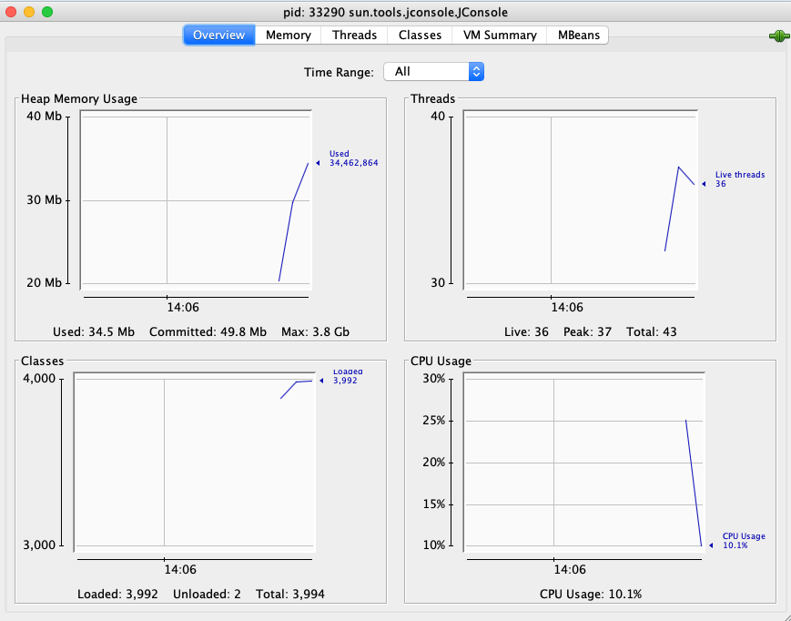
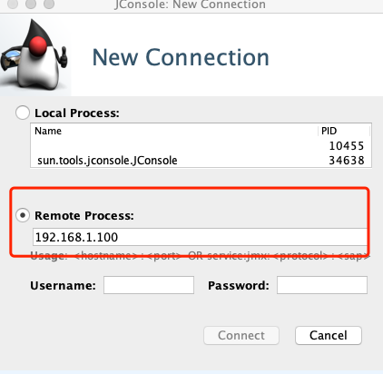

- 00 开篇词：选择 ZooKeeper，一步到位掌握分布式开发.md.html
- 01 ZooKeeper 数据模型：节点的特性与应用.md.html
- 02 发布订阅模式：如何使用 Watch 机制实现分布式通知.md.html
- 03 ACL 权限控制：如何避免未经授权的访问？.md.html
- 04 ZooKeeper 如何进行序列化？.md.html
- 05 深入分析 Jute 的底层实现原理.md.html
- 06 ZooKeeper 的网络通信协议详解.md.html
- 07 单机模式：服务器如何从初始化到对外提供服务？.md.html
- 08 集群模式：服务器如何从初始化到对外提供服务？.md.html
- 09 创建会话：避开日常开发的那些“坑”.md.html
- 10 ClientCnxn：客户端核心工作类工作原理解析.md.html
- 11 分桶策略：如何实现高效的会话管理？.md.html
- 12 服务端是如何处理一次会话请求的？.md.html
- 13 Curator：如何降低 ZooKeeper 使用的复杂性？.md.html
- 14 Leader 选举：如何保证分布式数据的一致性？.md.html
- 15 ZooKeeper 究竟是怎么选中 Leader 的？.md.html
- 16 ZooKeeper 集群中 Leader 与 Follower 的数据同步策略.md.html
- 17 集群中 Leader 的作用：事务的请求处理与调度分析.md.html
- 18 集群中 Follow 的作用：非事务请求的处理与 Leader 的选举分析.md.html
- 19 Observer 的作用与 Follow 有哪些不同？.md.html
- 20 一个运行中的 ZooKeeper 服务会产生哪些数据和文件？.md.html
- 21 ZooKeeper 分布式锁：实现和原理解析.md.html
- 22 基于 ZooKeeper 命名服务的应用：分布式 ID 生成器.md.html
- 23 使用 ZooKeeper 实现负载均衡服务器功能.md.html
- 24 ZooKeeper 在 Kafka 和 Dubbo 中的工业级实现案例分析.md.html
- 25 如何搭建一个高可用的 ZooKeeper 生产环境？.md.html
- 26 JConsole 与四字母命令：如何监控服务器上 ZooKeeper 的运行状态？.md.html
- 27 crontab 与 PurgeTxnLog：线上系统日志清理的最佳时间和方式.md.html
- 28 彻底掌握二阶段提交三阶段提交算法原理.md.html
- 29 ZAB 协议算法：崩溃恢复和消息广播.md.html
- 30 ZAB 与 Paxos 算法的联系与区别.md.html
- 31 ZooKeeper 中二阶段提交算法的实现分析.md.html
- 32 ZooKeeper 数据存储底层实现解析.md.html
- 33 结束语 分布技术发展与 ZooKeeper 应用前景.md.html
- 捐赠
26 JConsole 与四字母命令：如何监控服务器上 ZooKeeper 的运行状态？
在上节课中我们学习了在生产环境中，如何部署 ZooKeeper 集群服务。为了我们的程序服务能够持续稳定地对外提供服务，除了在部署的时候尽量采用分布式、集群服务等方式提高 ZooKeeper 服务的可靠性外，在服务上线运行的时候，我们还可以通过对 ZooKeeper 服务的运行状态进行监控，如运行 ZooKeeper 服务的生产服务器的 CPU 、内存、磁盘等使用情况来达到目的。在系统性能达到瓶颈的时候，可以增加服务器资源，以保证服务的稳定性。
JConsole 介绍
通常使用 Java 语言进行开发的技术人员对 JConsole 并不陌生。JConsole 是 JDK 自带的工具，用来监控程序运行的状态信息。如下图所示，我们打开系统的控制终端，输入 JConsole 就会弹出一个这样的监控界面。

JConsole 使用
介绍完 JConsole 的基本信息后，接下来我们来了解如何利用 JConsole 对远程 ZooKeeper 集群服务进行监控。之所以能够通过 JConsole 连接 ZooKeeper 服务进行监控，是因为 ZooKeeper 支持 JMX（Java Management Extensions），即 Java 管理扩展，它是一个为应用程序、设备、系统等植入管理功能的框架。
JMX 可以跨越一系列异构操作系统平台、系统体系结构和网络传输协议，灵活地开发无缝集成的系统、网络和服务管理应用。我们可以通过 JMX 来访问和管理 ZooKeeper 服务集群。接下来我们就来介绍一下监控 ZooKeeper 集群服务的相关配置操作。
在 JConsole 配置信息中，连接我们要进行监控的 ZooKeeper 集群服务器。如下面的流程所示，在配置文件中输入 ZooKeeper 服务器的地址端口等相关信息。
开启 JMX
首先，我们先开启 ZooKeeper 的 JMX 功能。在 ZooKeeper 安装目录下找到 bin 文件夹，在 bin 文件夹中 ，通过 vim 命令来编辑 zkServer.sh 文件。如下代码所示，输入 JMX 服务的端口号并禁止身份认证等配置。
-Dcom.sun.management.jmxremote.port=50000
-Dcom.sun.management.jmxremote.ssl=false
-Dcom.sun.management.jmxremote.authenticate=false
连接 ZooKeeper
配置完 JMX 的开启功能后，接下来我们通过系统终端启动 JConsole ，再在弹出的对话框中选择远程连接，然后在远程连接的地址中输入要监控的 ZooKeeper 服务器地址，之后就可以通过 JConsole 监控 ZooKeeper 服务器了。

四字母命令
除了上面介绍的 JConsole 监控控制台之外，ZooKeeper 还提供了一些命令，可使我们更加灵活地统计监控 ZooKeeper 服务的状态信息。 ZooKeeper 提供的这些命令也叫作四字母命令，如它们的名字一样，每一个命令都是由四个字母组成的。如下代码所示，在操作时，我们会打开系统的控制台，并输入相关的命令来查询 ZooKeeper 服务，比如我们可以输入 stat 命令来查看数据节点等信息。
echo {command} | nc 127.0.0.1 2181
介绍完四字母命令的调用方式和执行格式后，接下来我们介绍几种常见的四字母命令，分别是 stat 、srvr，以及 cons 等。
stat
stat 命令的作用是监控 ZooKeeper 服务器的状态，我们通过 stat 命令统计 ZooKeeper 服务器的 ZooKeeper 版本信息、集群数节点等信息，如下面的代码所示，我们在操作时会输入 echo stat 命令来输出查询到的服务状态信息到控制台。
$ echo stat | nc localhost 2181
Zookeeper version: 3.4.13- built on 06/29/2018 04:05 GMT
Clients:
/0:0:0:0:0:0:0:1:40598[0](queued=0,recved=1,sent=0)
Latency min/avg/max: 0/0/0
Received: 17
Sent: 16
Connections: 1
Outstanding: 0
Zxid: 0x0
Mode: follower
Node count: 4
srvr
srvr 命令与 stat 命令的功能十分相似，唯一不同的地方是 srvr 命令不会将与客户端的连接情况输出，通过 srvr 命令只会查询服务器的自身信息。
$ echo srvr | nc localhost 2181
Zookeeper version: 3.4.13- built on 06/29/2018 04:05 GMT
Latency min/avg/max: 0/0/0
Received: 26
Sent: 25
Connections: 1
Outstanding: 0
Zxid: 0x0
Mode: follower
Node count: 4
cons
cons 命令用于输出当前这台服务器上所有客户端连接的详细信息，包括每个客户端的客户端 IP 、会话 ID 和最后一次与服务器交互的操作类型等。
$ echo cons | nc localhost 2181
/0:0:0:0:0:0:0:1:31569[0](queued=0,recved=1,sent=0)
ruok
ruok 命令的主要作用是查询 ZooKeeper 服务器是否正常运行。如果 ZooKeeper 服务器正常运行，执行完 ruok 命令后，会得到 “imok” 返回值。如果 ZooKeeper 服务没有正常运行，则不会有任何返回值。在使用 ruok 命令的时候，在这里我们要注意的一点是，有些时候即使返回了 “imok” 字段，ZooKeeper 服务也可能没有正常运行，唯一能确定的是该台服务器的 2181 端口是打开的，如下代码所示。
$ echo ruok | nc localhost 2181
监控集群信息
介绍完系统监控工具 JConsole 以及常用的命令后，接下来我们就从实际的生产角度出发，来看一下在 ZooKeeper 集群生产环境中如何监控系统集群运行情况，以及如何利用我们监控的数据诊断 ZooKeeper 服务的运行问题并解决问题。
虽然 ZooKeeper 服务提供了丰富的四字母命令，让我们可以通过命令来获得 ZooKeeper 服务相关的运行信息，但是在实际的生产环境中， ZooKeeper 集群的规模可能很大，逐一通过命令的方式监控 ZooKeeper 服务显然不可行。因此，这里我们会介绍一种自动的监控 ZooKeeper 集群运行服务的方式。
为了编写自动化监控 ZooKeeper 集群服务，首先我们要明确需要监控哪些数据类型，在这里我们主要对最小会话超时、最大会话超时、最大连接数、发送的数据包、接收的数据包进行监控，而具体的我们则会通过 Zabbix 来实现。
Zabbix
Zabbix 是一个性能监控的管理工具，它基于 Web 界面提供分布式系统监视，以及网络监视功能的企业级开源解决方案。
安装
我们可以通过 Maven 或 Gradle 项目管理工具下载 Zabbix，这里我们主要以 Maven 工程为例，如下代码所示，需要在 pom 文件中引入相关的配置信息。
<dependency>
<groupId>io.github.cgi</groupId>
<artifactId>zabbix-api</artifactId>
<version>0.0.5</version>
</dependency>
配置项
将 Zabbix 引入到我们的工程项目后，接下来，就可以编写一个程序来自动化地获取 ZooKeeper 服务的相关信息。这里我们创建一个 ZooKeeperInfo 脚本，如下代码所示，在脚本文件中我们创建了一个 mntr 数组变量用来设置我们想要监控的服务参数，比如 minSessionTimeout 最小超时时间、maxSessionTimeout 最大超时时间等。
public class ZooKeepInfo(){
Static Final String ZookeeperServer = '127.0.0.1'
Static Final String ZookeeperPort = 2181
Static Final String ZookeeperCommand = 'mntr'
Static Final String ZookeeperKey = 'zk_version
CommandKey={
'conf':['clientPort','dataDir','dataLogDir','tickTime','maxClientCnxns','minSessionTimeout','maxSessionTimeout','serverId','initLimit','syncLimit','electionAlg','electionPort','quorumPort','peerType'],
'ruok':['state'],
'mntr':['zk_version','zk_avg_latency','zk_max_latency','zk_min_latency','zk_packets_received','zk_packets_sent','zk_num_alive_connections','zk_outstanding_requests','zk_server_state','zk_znode_count','zk_watch_count','zk_ephemerals_count','zk_approximate_data_size','zk_open_file_descriptor_count','zk_max_file_descriptor_count','zk_followers','zk_synced_followers','zk_pending_syncs']
}
class ZooKeeperCommands(object):
def ZooKeeperCommands(self,server,port,zkCommand,zkKey):
self._server = server
self._port = port
self._zkCommand = zkCommand
self._zkKey = zkKey
self._value_raw = None
self._value = None
void zkExec(this):
self._exec_command()
self._parse_value()
return self._value
void _exec_command(this):
Telnet tn = Telnet(self._server, self._port, timeout=30)
tn.read_until('login: ')
tn.write(username + '\n')
tn.read_until('password: ')
tn.write(password + '\n')
tn.read_until(finish)
}
结束
本节课我们主要学习了 ZooKeeper 集群在日常生产环境中的维护问题。首先介绍了 ZooKeeper 集群通过 JMX 方式进行远程监控的方法，然后学习了 JConsole 以及四字母命令的使用方式，最后介绍了在实际工作中，面对大规模的 ZooKeeper 集群时，我们如何做到自动化的获取监控数据。
本节课在实现自动化的数据获取时，利用了一个开源的性能监控工具 Zabbix 。除了课中提到的一些性能监控参数外，我们也可以利用 Zabbix 监控一些和自身业务相关的数据信息，比如在对数据节点的创建数量有严格要求的情况下，我们可以编写相关的脚本对某一个数据节点下子节点的创建个数进行监控，当该子节点个数大于我们设置的某一个临界值时，会给出报警或禁止该节点再进行创建操作。
© 2019 - 2023 Liangliang Lee. Powered by gin and hexo-theme-book.